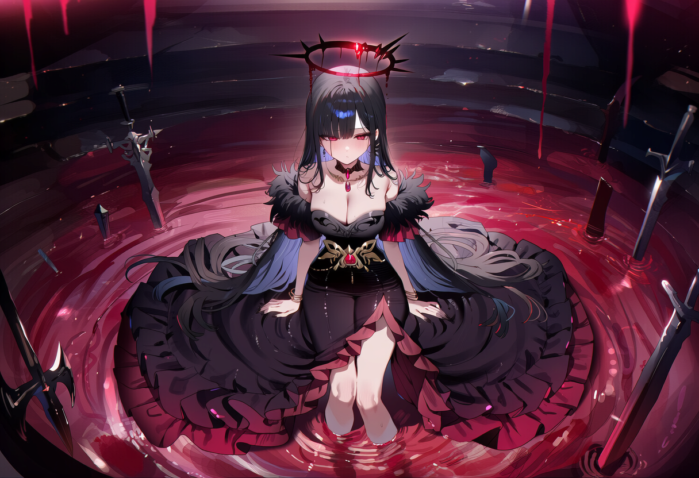

The Realm of Blood
나락의 층계
피의 신이 머무는 곳
끝없이 이어지는 붉은 계단이 아래로, 또 아래로 뻗어 있다. 짙은 피안개가 계단 사이로 낮게 깔려 있고, 곳곳에 오래된 무기와 갑옷이 말없이 놓여 있다. 심장 박동처럼 낮게 울리는 진동이 계단 전체를 타고 흐르며, 엄숙하고 비장한 공기가 감돈다.
Gallery
[나락의 층계 이미지 삽입 위치]

끝없이 이어지는 붉은 계단이 아래로, 또 아래로 뻗어 있다. 짙은 피안개가 계단 사이로 낮게 깔려 있고, 곳곳에 오래된 무기와 갑옷이 말없이 놓여 있다. 심장 박동처럼 낮게 울리는 진동이 계단 전체를 타고 흐르며, 엄숙하고 비장한 공기가 감돈다.
